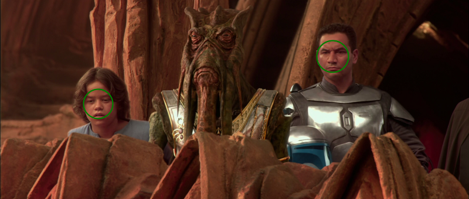
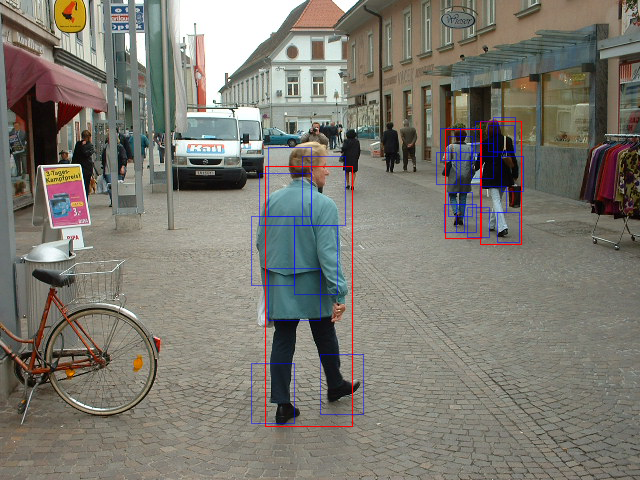
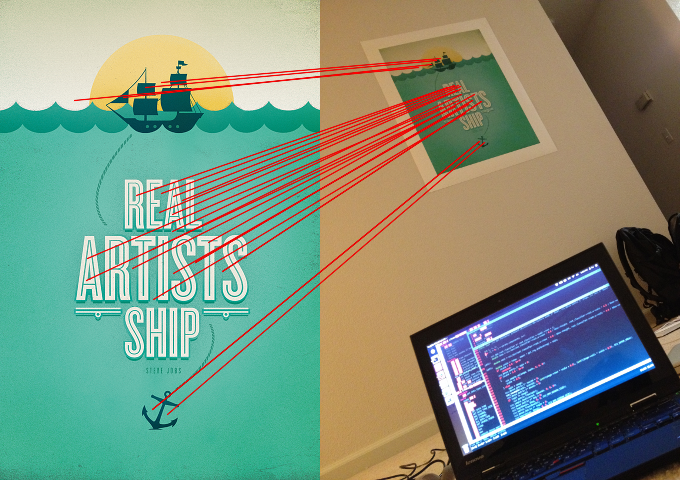

Random tech links
This is an archived post
Previous
Index
Next
libccv: modern computer vision library
June 30 2012, 5:42 AM
by Alexey Shamrin
ccv
: a modern computer vision library,
introducing version 0.1
:



(
GitHub
,
HN
)
Tags
algo
25 views and 0 responses